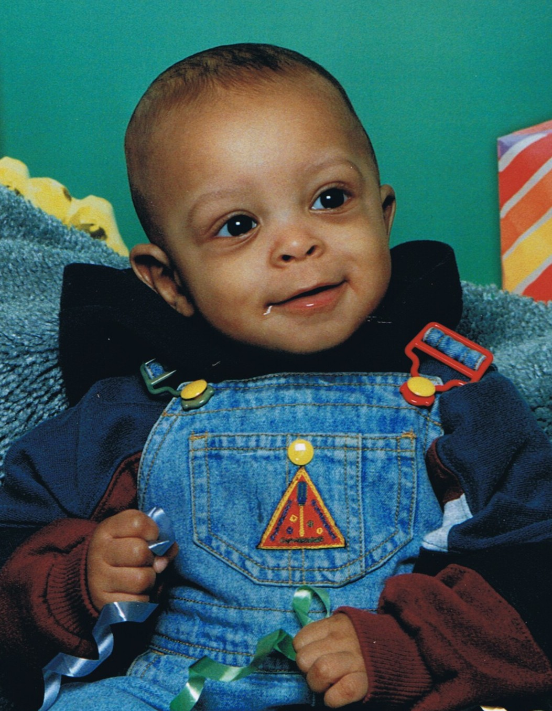

L'HISTOIRE DE TON JOUR
17 Septembre 2004 · Montréal, Canada
Cher Manu,
Bon anniversaire ! Si on remonte le temps jusqu'au jour où ton histoire a commencé, un doux vendredi 17 septembre 2004, on dirait que le ciel et la terre s'étaient donné le mot pour t'accueillir à bras ouverts, ici à Montréal.

17 sept. 2004Ton empreinte astrologique — 17 Septembre 2004
Tu es venu au monde sous le signe de la Vierge — cette sagesse pratique, ce souci du détail et cette envie tranquille de rendre les choses plus belles, plus justes, mieux ordonnées. Ta Lune en Balance guide ton cœur vers l'harmonie et le besoin d'apaiser les tensions autour de toi.
Comme tu as poussé ton premier cri un vendredi, la brillante planète Vénus veillait sur ton berceau : elle t'a offert ce charme naturel, cette loyauté en amitié et cette sensibilité artistique qui te correspondent si bien.
Et le passage de Saturne en Cancer, juste au moment de ta naissance, a planté en toi un amour profond pour ta famille — ce besoin de bâtir un foyer solide, un vrai refuge pour les tiens.
Un jour d'une incroyable richesse culturelle à travers le globe
Le jour de ta naissance résonne partout dans le monde. Dans la tradition chrétienne, on y fête la Saint-Robert-Bellarmin et la fête orthodoxe des saintes Sophie, Foi, Espérance et Charité — des symboles de sagesse et de force intérieure.
Sur le calendrier hégirien, tu es né le 2 Sha'ban 1425 AH, un mois consacré à la préparation spirituelle et aux gestes de bienveillance.
Et pour les peuples autochtones d'Amérique du Nord, la mi-septembre est la Lune des Moissons — un temps de célébration et de gratitude où la communauté se rassemble autour des récoltes généreuses.
L'atmosphère de ta journée de naissance
Le vendredi 17 septembre 2004, Montréal t'a accueilli sous une météo d'arrière-saison parfaite : 19 °C, ciel voilé et brise légère. Pour tes 22 ans aujourd'hui, les prévisions s'annoncent tout aussi douces — une belle journée ensoleillée idéale pour des photos dehors.
🎵 Pop Culture : Si tu avais arpenté les rues ce jour-là, tu aurais entendu Goodies de Ciara, She Will Be Loved de Maroon 5 et Parce qu'on vient de loin de Corneille. C'était l'époque des iPods à molette et de MSN Messenger. Dans les cinémas, Sky Captain et Resident Evil : Apocalypse dominaient le box-office.
Le temps file avec une précision fascinante
En ce 17 septembre 2026, tu franchis le cap de tes 22 ans, ce qui représente exactement :
Ton prochain cap secret : le 8 500ᵉ jour de ta vie aura lieu le 26 décembre 2027. Et pour la petite anecdote magique, ton 9 500ᵉ jour tombera le 21 septembre 2030 — quatre jours à peine après tes 26 ans !
La route qui s'ouvre devant toi
« Que cette nouvelle année te rapproche de tes rêves, t'aligne avec tes étoiles et t'enracine dans une joie profonde. »
Avec toute ma tendresse,
Ta Maman qui t'aime